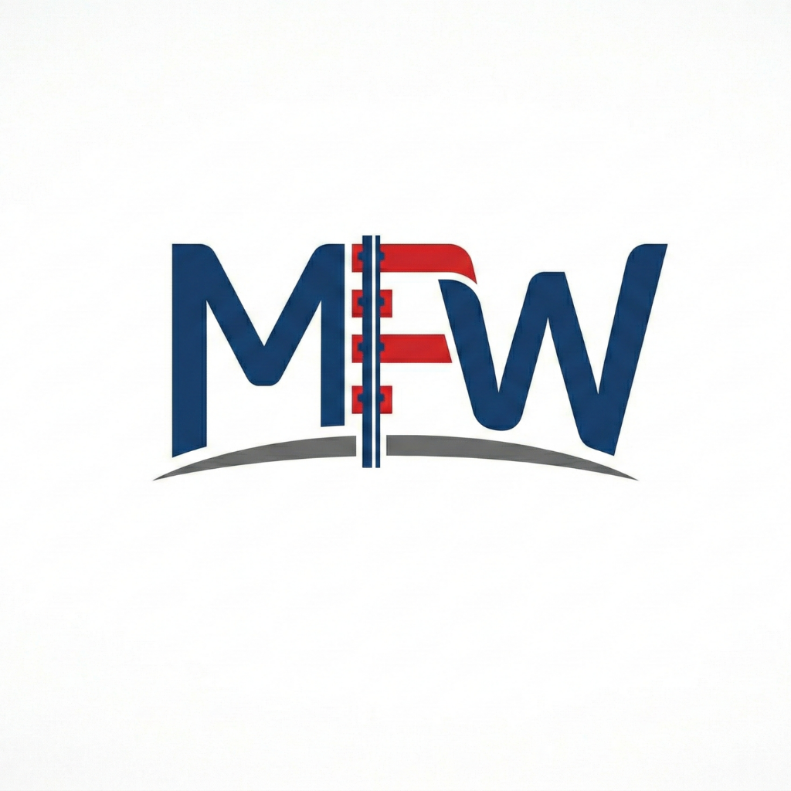

Bir daha ters trene binme.
Her hattın iki ucu bu postta.
Tabelada gideceğin durak yazmaz. Trenin gittiği son durak yazar. Sen, durağının hangi uçta kaldığına bakarsın.
Örnek: Şişli-Mecidiyeköy
Taksim → Osmanbey → Şişli-Mecidiyeköy → … → Hacıosman
Tabelada Hacıosman yazan peron.
Doğru trenBazı trenler hattın sonuna kadar gitmez. Ekranda başka bir son durak yazıyorsa, senin durağın ondan önce mi, bir bak.
M1A ve M1B Yenikapı'dan aynı hatta çıkar, yolda ayrılır. Binmeden trenin son durağına bak.
MetroFlow'da durağını seç: iki yön, sıradaki seferler ve kaç dakika kaldı, tek ekranda.
